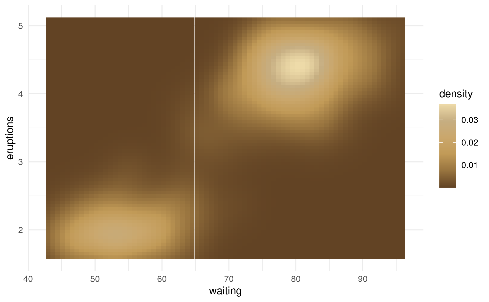
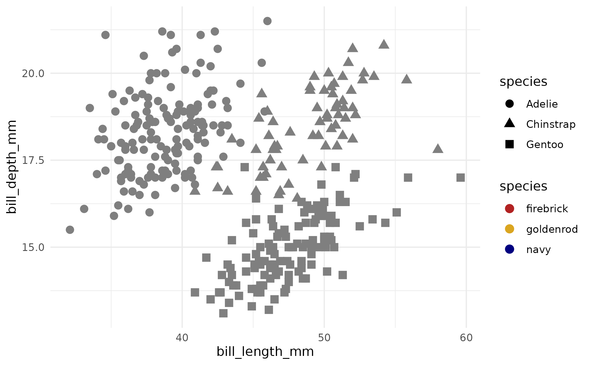

The {taylor} package comes with it’s own class of color palettes, inspired by the work of Josiah Parry in the {cpcinema} package.
Creating palettes
{taylor} uses {vctrs} to create a special vector class of color palettes that can be used to create and visualize palettes. We can create a palette using the color_palette() function. We only have to pass a vector of hexadecimal values or valid R color (from colors()), and a palette is created that will print a preview of the colors.
library(taylor)
my_pal <- color_palette(c("firebrick", "turquoise", "#0051ba"))
my_pal
#> <color_palette[3]>
#> firebrick
#> turquoise
#> #0051baWe can also use color_palette() on an existing palette to interpolate additional values, by specifying that we want more colors than were originally specified.
my_big_pal <- color_palette(my_pal, n = 10)
my_big_pal
#> <color_palette[10]>
#> #B22222
#> #984C48
#> #7F766F
#> #66A096
#> #4CCABC
#> #38D0CD
#> #2AB0C8
#> #1C90C3
#> #0E70BE
#> #0051BASimilarly, if we have a large color palette, we can select just a few representative colors.
my_small_pal <- color_palette(my_big_pal, n = 5)
my_small_pal
#> <color_palette[5]>
#> #B22222
#> #7F766F
#> #4CCABC
#> #2AB0C8
#> #0051BABuilt-in palettes
The {taylor} package comes with a few palettes built-in, based on Taylor Swift’s album covers. There can be viewed using taylor::album_palettes.
album_palettes
#> $taylor_swift
#> <color_palette[5]>
#> #1D4737
#> #81A757
#> #1BAEC6
#> #523d28
#> #E7DBCC
#>
#> $fearless
#> <color_palette[5]>
#> #6E4823
#> #976F34
#> #CBA863
#> #ECD59F
#> #E1D4C2
#>
#> $fearless_tv
#> <color_palette[5]>
#> #624324
#> #A47F45
#> #CAA462
#> #C5AA7C
#> #EEDBA9
#>
#> $speak_now
#> <color_palette[5]>
#> #2E1924
#> #6C3127
#> #833C63
#> #D1A0C7
#> #F5E8E2
#>
#> $red
#> <color_palette[5]>
#> #201F39
#> #A91E47
#> #7E6358
#> #B0A49A
#> #DDD8C9
#>
#> $red_tv
#> <color_palette[5]>
#> #400303
#> #731803
#> #967862
#> #B38468
#> #C7C5B6
#>
#> $`1989`
#> <color_palette[5]>
#> #5D4E5D
#> #846578
#> #92573C
#> #C6B69C
#> #D8D8CF
#>
#> $reputation
#> <color_palette[5]>
#> #2C2C2C
#> #515151
#> #5B5B5B
#> #6E6E6E
#> #B9B9B9
#>
#> $lover
#> <color_palette[5]>
#> #76BAE0
#> #8C4F66
#> #B8396B
#> #EBBED3
#> #FFF5CC
#>
#> $folklore
#> <color_palette[5]>
#> #3E3E3E
#> #545454
#> #5C5C5C
#> #949494
#> #EBEBEB
#>
#> $evermore
#> <color_palette[5]>
#> #160E10
#> #421E18
#> #D37F55
#> #85796D
#> #E0D9D7Or we can access a single palette.
album_palettes$fearless_tv
#> <color_palette[5]>
#> #624324
#> #A47F45
#> #CAA462
#> #C5AA7C
#> #EEDBA9Also included is a palette that includes one representative color from each album, taylor::album_compare.
album_compare
#> <color_palette[11]>
#> taylor_swift
#> fearless
#> fearless_tv
#> speak_now
#> red
#> red_tv
#> 1989
#> reputation
#> lover
#> folklore
#> evermoreUsing color palettes with {ggplot2}
The {taylor} package comes with a set of functions built in for plotting in {ggplot2} with the album palettes. For example, we can use scale_fill_taylor_c() to create a continuous scale based on one of the album palettes. For more details on how to use the scale functions included in {taylor}, check out vignette("plotting").
library(ggplot2)
p <- ggplot(faithfuld, aes(waiting, eruptions, fill = density)) +
geom_tile() +
theme_minimal()
p + scale_fill_taylor_c(album = "Fearless (Taylor's Version)")
You can also use your custom palettes with {ggplot2}. For example, we can create a palette of greens, and then use ggplot2::scale_fill_gradientn() or ggplot2::scale_color_gradientn() to use the palette.
green_pal <- color_palette(c("#E5F5E0", "#A1D99B", "#31A354"))
green_pal
#> <color_palette[3]>
#> #E5F5E0
#> #A1D99B
#> #31A354
ggplot(faithfuld, aes(waiting, eruptions, fill = density)) +
geom_tile() +
scale_fill_gradientn(colors = green_pal) +
theme_minimal()
Finally, if we have a discrete scale, we can use ggplot2::scale_fill_manual() or ggplot2::scale_color_manual(). Here, we use the {palmerpenguins} to map our palette to the species of penguin.
library(palmerpenguins)
penguin_pal <- color_palette(c("firebrick", "goldenrod", "navy"))
penguin_pal
#> <color_palette[3]>
#> firebrick
#> goldenrod
#> navy
ggplot(penguins, aes(x = bill_length_mm, y = bill_depth_mm)) +
geom_point(aes(shape = species, color = species), size = 3) +
scale_color_manual(values = penguin_pal) +
theme_minimal()